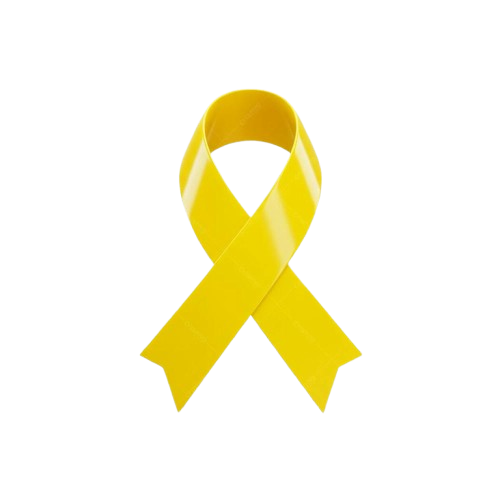

#VocêNãoEstáSozinho
Uma campanha de conscientização sobre a prevenção do suicídio.
O Setembro Amarelo é uma campanha de prevenção ao suicídio, com o objetivo direto de alertar a população sobre a realidade do suicídio e suas formas de prevenção. A campanha acontece durante o mês de setembro, mas a conscientização é para o ano todo.
É um movimento iniciado no Brasil em 2015 pelo Centro de Valorização da Vida (CVV), Conselho Federal de Medicina (CFM) e Associação Brasileira de Psiquiatria (ABP).
Atendimento voluntário e gratuito, 24 horas por dia, todos os dias da semana. Sigiloso.
Serviços de saúde mental públicos e gratuitos.
Em casos de emergência, procure um pronto atendimento médico ou hospitalar.
Ofereça um ouvido atento e sem preconceitos. Mostre que você se importa.
Sugira que a pessoa converse com um psicólogo, psiquiatra ou médico.
Continue demonstrando apoio e acompanhando a pessoa, mesmo que de longe.
Mudanças de humor, isolamento, perda de interesse em atividades. Não ignore.
Que bom que você nos procurou. Como podemos te ajudar?
Seu nome (ou apelido)
Seu E-mail (não será divulgado)
Sua mensagem